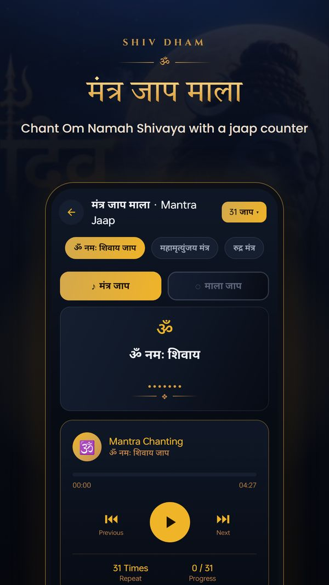

जय गिरिजा पति दीन दयाला। सदा करत सन्तन प्रतिपाला॥
Jai Girija pati deen dayala, Sada karat santan pratipala.
Your daily companion for Lord Shiva bhakti. Read the Shiv Aarti and Shiv Chalisa right here — then carry them in the free Shiv Dham app with mantra jaap, darshan, 12 Jyotirlinga, bhajans and Mahadev wallpapers.
जय गिरिजा पति दीन दयाला। सदा करत सन्तन प्रतिपाला॥
Jai Girija pati deen dayala, Sada karat santan pratipala.
The full Om Jai Shiv Omkara aarti with Hindi & English meaning.
Open →Jai Girija Pati Deen Dayala — every chaupai with its meaning.
Open →Panchakshari and Mahamrityunjaya mantra for daily jaap.
Open →The twelve sacred abodes of Mahadev across India.
Open →Jaap mala, darshan, rashifal, bhajans, wallpapers & more.
Open →Hanuman Chalisa, Bajrang Baan & Sundarkand — our Hanuman bhakti app.
Open →Two mantras sit at the heart of Shiv bhakti. Chant them slowly, 108 times on a rudraksha mala — or let the Shiv Dham jaap counter keep the count while the mantra plays.
ॐ नमः शिवाय
Om Namah Shivaya
“I bow to Shiva” · 108 times
ॐ त्र्यम्बकं यजामहे सुगन्धिं पुष्टिवर्धनम्। उर्वारुकमिव बन्धनान्मृत्योर्मुक्षीय माऽमृतात्॥
Om Tryambakam yajamahe sugandhim pushtivardhanam, Urvarukamiva bandhanan mrityor mukshiya maamritat.
For health, protection & peace · 108 times
Whether you pray every Somvar, keep the Sawan vrat or celebrate Mahashivratri, Shiv Dham brings Mahadev's bhakti to your phone in one calm, easy app.



Sing “Om Jai Shiv Omkara” with clear lyrics and get morning & evening aarti time reminders.
Read the aarti →The complete Shiv Chalisa in large text, in Hindi or Hinglish, with adjustable font size.
Read the chalisa →Chant Om Namah Shivaya, the Mahamrityunjaya and Rudra mantras with a digital mala — 11 to 1008.
See the mantras →Do darshan of Bholenath and offer flowers (pushp arpan) any time, anywhere.
History, significance and darshan of all twelve Jyotirlingas — Somnath to Grishneshwar.
See the list →Pick your rashi and read today's horoscope to plan your day with Mahadev's blessings.
Mahadev bhajans, katha and short bhakti videos — swipe through for daily inspiration.
Shiv, Bholenath, Neelkanth and Mahakal wallpapers for your home and lock screen.
Inspiring Mahadev quotes and thoughts to share with family on WhatsApp.
The Jyotirlingas are the twelve shrines where Lord Shiva is worshipped as a pillar of light. The Shiv Dham app has the story, significance and darshan of each one.
Lord Shiva — Mahadev, Bholenath, Shankar, Neelkanth, Mahakal — is the Adiyogi, easy to please and quick to bless. A short, sincere daily practice is enough:
Yes. Shiv Dham - Bhakti & Mantra is free to download on Google Play for Android phones.
Sing the Shiv Aarti with reminders, read the Shiv Chalisa, chant Om Namah Shivaya and the Mahamrityunjaya mantra on a digital jaap mala, do virtual darshan with pushp arpan, read about the 12 Jyotirlinga, check your daily rashifal, watch Mahadev bhajans and shorts, and set HD Shiv wallpapers.
Monday (Somvar) is Lord Shiva's day. The month of Sawan, Pradosh vrat (Trayodashi) and Mahashivratri are especially auspicious for Shiv puja, jaap and fasting.
The app works in Hindi and English. The Shiv Chalisa can be read in Devanagari Hindi or in Hinglish (Roman) script.
Traditionally the mantra is chanted 108 times on a rudraksha mala. You can start with 11 or 21 and grow to 108 or 1008 — the Shiv Dham jaap counter keeps the count for you.
Shiv Aarti with reminders, Shiv Chalisa in big clear text, Om Namah Shivaya jaap mala, virtual darshan, 12 Jyotirlinga, Mahadev bhajans and HD wallpapers — free, in Hindi & English.